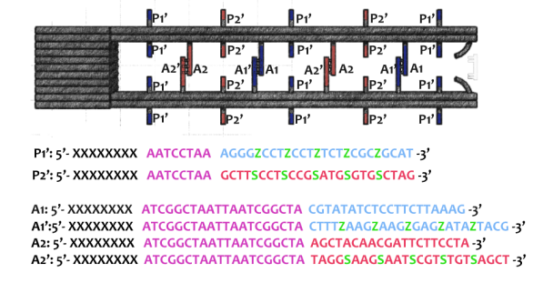
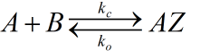
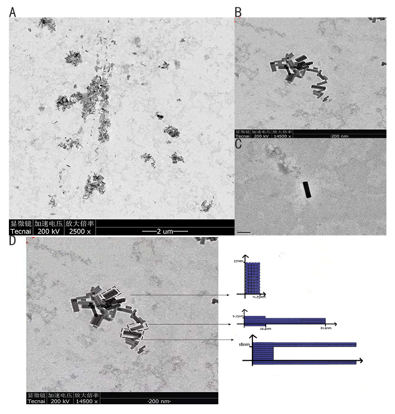

[1]
.PROJECT
Background
DNA origami plays an indispensable role in assembling spectacular micro-architectures and constructing molecular machines in nano world. By folding a long single strand (scaffold, 7249bp, as building block) and combining it with a series of well-designed oligonucleotide strands, DNA strands self-assemble and construct highly complicated nanostructure under controlled environment according to the principle of complementary base pairing
Figure 1
Traditionally, nanomachines have been motivated by the input of chemical energy, for example, adding fuel strands. Competitive strands displacement reaction between fuel chains and staples (combined with DNA scaffold) powers the movement of nanomachines
[2]
. However, such control method remains many disadvantages. First of all, the utilization efficiency is rather low. Strands displacement basically needs a long responsive time in reaction system. Also, the double-strand waste accumulates as the reaction goes on, which lowers the concentration of fuel chains gradually, bringing rate reduction to subsequent movements and inevitable chemical contamination.Figure 2
Our idea
Here, we design a photo-controlled molecular motor, aiming to adopt a new power-input approach that regulates the movement of nanomachine.
According to the research of Asanuma et al, a chemical called Azobenzene(Azo) and its derivative 2',6'-Me-Azo(S-DMazo) have excellent photo-responsive properties
[3]
. Moreover, in view of the fact that the space size of Azo and its derivative is very close to the base in nucleic acid, it is possible to wedge Azo or its derivative between two nucleotides in DNA single strand and regulate the hybridization or dissociation of duplex on exposure to different light conditions. As the figure 3 shows, duplex wedged with Azo dissociates at the wavelength of 340nm when the strand with S-DMAzo hybridizes. On the contrary, the duplex wedged with S-DMAzo unwounded under the light of 390nm meanwhile strand wedged with Azo pairs.Figure 3
Our nanomachine consists of a track with two rods and a ring made of DNA origami. As the figure 4 shows, two kinds of strands (marked in two colors) are attached to certain positions on the rod and ring. With photoswitches under different wavelengths of light, the ring moves from one end of the rod to the other. This nanomachine solves chain contamination problem and improves the reaction efficiency in system. Like a butterfly flaps it's wings, Azo isomerizes so that the duplex wedged with Azo dissociates and the ring steps along the rod, moving through the block in succession like kinesin
[4]
, which inspires us to mimic the distance-reliant biochemical process in vitro and measure it' s accessible length in nanoscale. The oriented-moving ring opens a new door in the field of molecule transport.
Figure 4
The isomerization of Azo and S-DMazo can be compared to the process of two beautiful butterflies waving their wings. Furthermore, as these compounds inserted in DNA sequence, photo-isomerization between trans and cis forms leads to the hybridization and dissociation in dsDNA just like a butterfly fluttering in Rio de Janeiro could change the weather in Chicago. The butterfly effect sensitively emphases the unexpected role initial conditions plays in which a small change in one state of a deterministic nonlinear system may bring about large differences in a later state. Just like our nanomachine, the small change in conformation can result in nanoscale movement. That's the reason why we name our project Butterfly Effect.
Figure 5
Achievements
DNA Design
Chemical Reaction
Characterization
Synthesis
Function test
Add ordinary staples
Wedged into DNA strands
Annealing
Future work
In order to test the nanomachine's ability to transport molecules, we plan to test and verify a reaction process. One typical cascade reaction is between glucose oxidase
[5]
(GOx) and horseradish peroxidase[6]
(HRP). GOx catalyzes the oxidation of glucose by oxygen and generates gluconic acid with hydrogen peroxide, while HRP reduces the hydrogen peroxide to H2O and turns ABTS2- to ABTS. HRP is modified to the ring and GOx to the rod. As our nanomachine gives a ride to these enzymes, HRP gets closer to GOx. Therefore, reaction rate can be demonstrated quantitatively by factor consisting of rod length and the frequency of UV and Vis operation. Hopefully, our design could provide a more accurate way to describe the process of enzymes reaction.Figure 6
REFERENCE
1. Rothemund PW. Folding DNA to create nanoscale shapes and patterns. Nature. 2006;440(7082):297-302.
2. Shin J-S, Pierce NA. A Synthetic DNA Walker for Molecular Transport. Journal of the American Chemical Society. 2004;126(35):10834-5.
3. Nishioka H, Liang X, Kato T, Asanuma H. A photon-fueled DNA nanodevice that contains two different photoswitches. Angew Chem Int Ed Engl. 2012;51(5):1165-8.
4. Bhabha G, Johnson GT, Schroeder CM, Vale RD. How Dynein Moves Along Microtubules. Trends Biochem Sci. 2016;41(1):94-105.
5. Wong CM, Wong KH, Chen XD. Glucose oxidase: natural occurrence, function, properties and industrial applications. Applied Microbiology and Biotechnology. 2008;78(6):927-38.
6. Carlsson GH, Nicholls P, Svistunenko D, Berglund GI, Hajdu J. Complexes of Horseradish Peroxidase with Formate, Acetate, and Carbon Monoxide. Biochemistry. 2005;44(2):635-42.
DESIGN
Compound
Azobenzene contains two benzene rings bridged by a N=N double bond. It has both cis and trans conformation.Attractively, Azobenzene(Azo) and its derivative 2',6'-Me-Azo(S-DMazo) have excellent photo-responsive properties. In visual light, Azo remains in trans structure while it transforms to cis structure once exposed to ultraviolet （UV，λ=340 nm). The form of Azo changes when irradiation condition switches. So does it with SD-Mazo.
With modification of two methyl groups at the ortho positions of azobenzene, a methylthio and a carboxylate group at the para positions, S-DMazo (2',6'-Me-Azo), is synthesized. Because carboxyl group pulls the electron and the alkyl group weakly pushes it, which is called a push–pull (or push–push) process, the absorption maximum shifts to the visible region (λ=390 nm).
Figure 1
There usually exist two mechanisms to describe the thermal isomerization process: inversion and rotation. The inversion route proceeds through a transition where one of the nitrogen atoms is sp hybridized, whereas the rotation route involves in disruption of a nitrogen–nitrogen π bond and rotation around the remaining σ bond. The sp-hybridized nitrogen bond is stable in nonpolar solvent due to its hydrophobicity while the rotation route is stabilized in polar system owing to its N-N single bond. Therefore, the solvent dependence helps select the real mechanism-----inversion
[1]
.Figure 2
Meanwhile, the substitution for Azo with two ortho methyl groups remarkably hinders the thermal isomerization from trans to cis. At the transition state, lone pair electrons in the p orbit in Nα atom cause steric hindrance with the methyl groups on the twisted distal benzene rings, which markedly retards the inversion to the trans form.
Figure 3
Therefore, Tm of S-DMazo (2',6'-Me-Azo) in trans form increases while the one in cis form drops, leading to the multiplication of △Tm and giving a three-times larger change in △Tm than the unmodified form.
In conclusion, it shows great photoregulatory ability and thermal stability in Azo and S-DMazo.
Compound wedged in DNA
It is reported that the size of the Watson–Crick base-pair in this case is around 11*10^(-9)m, whereas for unmodified azobenzene it is 11–12*10^(-9)m, whereas for unmodified azobenzene it is 11–12*10^(-9)nm. So it is possible to wedge Azo and its derivative into DNA sequence to replace original bases. Several research groups have utilized azobenzene to control duplex formation. Alternating UV/vis illumination results in cis-to-trans isomerization of Azo and its derivatives, which trigger the dissociation of DNA duplex.
Figure 4
Moreover, the properties changes if Azo is modified by different functional groups, so it does with the peaks of its photoresponsive wavelength
[2]
. Compared with 340nm maximum absorption wavelength in Azo, absorption property of S-DMazo shifts to 390nm due to modification of two methyl groups at the two ortho positions of azobenzene. The Photo-responsive wavelength for Azo is 340 nm where it remains in cis but steric hindrance between strands increases, causing DNA double strands unpaired. Under 390 nm irradiation, Azo in DNA keeps in trans form due to the space double helix distortion force, counteracting the base stacking force between Azo and adjacent bases so the duplex strands remains unchanged. In a word, the photoresponsive wavelengths of the corresponding derivatives vary with different functional groups modified on azobenzene. Therefore, we take advantage of these excellent properties to design a light-controlled nanomachine.
Structure: DNA ring
As shown in Figure 5, the DNA track is composed of two identical rods connected in U shape and the DNA ring
moves freely on either of the rods. This design helps the ring get on the rod with a better chance. Three-view drawings exhibits DNA rod in three aspects, respectively.
Figure 5
As shown in Figure 6, two kinds of ssDNAs（P1-1/2，P2-1/2 ) are attached to the ring as legs, which can bind to specific anchor strands along DNA rod . The specific DNA sequence is also shown in figure 6. The sequences in different color represent their functions. The sequences marked in black fix the leg in ring. The sequences in blue and red are designed to hybridize with anchor strands on rods meanwhile the purple parts don't pair with any sequence and it's especially designed to elongate door strands and provide large convenience to lock the doors.
Figure 6
The detailed caDNAno design pictures are shown in figure 7.Click the second picture in Figure 7 for original caDNAno design.(Download all staple sequences of the ring staples)
Figure 7
The result of CanDo are shown in Figure 8
Figure 8
Structure: DNA track
As shown in Figure 9, the DNA track is composed of two identical rods connected in U shape and the DNA ring moves freely on either rod. This design helps the ring get on the rod with a better chance. Three-view drawings pictures exhibits DNA rod in three aspects, respectively.

Figure 9
As shown in Figure10, The linking strands between two rods can be categorized as anchor strands and door strands based on their functions that anchor strands contribute to trapping the moving ring, meanwhile the door strands, as their names suggest, block the ring's drawback.
The door and anchor strands wedged with Azo and S-DMAzo separated uniformly on the rods. The switches of irradiation wavelengths between 340nm and 390nm make two kinds of strands (in blue and red colors respectively) lock alternately in order to regulate the movements of the ring on the track.

Figure 10
The detailed caDNAno design pictures are shown in figure 11.Click the second picture in Figure 11 for original caDNAno design.(Download all staple sequences of the track staples)
Figure 11
The result of CanDo are shown in Figure 12
Figure 12
Movement
In order to forestall the ring to fall off the rod, we adopt another kind of door at the very beginning as figure 13 shows. It consists of two single strands linking to both ends of two rods as lock strands. After successfully incubating rings and rods together, lock strands are added later to close off the entrance.
Figure 13
(P1' refers to the strands in blue, P2' is in red on the rod as door )
When illuminating 390nm light, Azo keeps in trans form while S-DMAzo remains in cis form so Azo-tethered strands can form the duplex but S-DMAzo-tethered strands cannot. The ring binds to the P1' anchor(Fig.14). At first, the ring moves aimlessly along the track in dynamics. Later, it will be entrapped into P2' anchor to form duplex and has no way to move in previous direction, exhibiting the movements of the ring from the first door to the next. When alternating the light to 390 nm again, the ring faces the same situation and it binds the P1'instead. When illuminating 340nm light, instead, the situation interchanges exactly between S-DMAzo and Azo. The ring will leave P1' and bind to P2' anchor.With consequent photoswitching, the ring moves in one direction continuously.
Figure 14
Fluorescence resonance energy transfer (FRET) occurs when the distance between suitable donor and receptor decreases by no more than 10nm. Then donor generates a visual reduction of emission intensity on the spectrum and receptor emits stronger fluorescent signal. Donor FAM and Cy3 are employed on the ring and corresponding receptor DAB is fixed on the track. However, Considering the signal interfere between two fluorophores, the FRET experiment needs to be finished in different groups. Each group is designed to demonstrate movements of the ring in a limited range for one step via a single pair of fluorophore. The results collected can finally confirm the whole movements along the track.
Figure 15
Model
1. Background
In order to describe our model in a mathematical way, give some suggestions on experiments and apply our design into a practical use, we set up series of models to depict our architecture. Firstly, we focus on the chemical process of ring loading on rod. This model is purposed to give us a suggestion on proportion of rings and rods while incubation. Secondly, we try to use model to describe DNA damage under UV irradiation. Azobenzene can be used to render our DNA machine photo-controlled which means specific wavelength UV condition is essential. However, UV spectra poses a potential issue since DNA can absorb UV light and undergo unwanted photochemical changes
[3]
. Such changes may bring alternation in conformation of DNA architecture. It is necessary to make description on photo damage. Third, we try to apply our structure to enzyme distance controling, DNA storage unit. Thus, kinematics description is also an important aspect we need to focus on. With mathematic solid we manipulate our design in an appropriate manner.1.1 Basic questions
Based on background, we then rise three basic and direct questions
1.1.1 Dynamic of combination process
How to describe loop-to-rod process linking two tiles through single strands DNA strands. This is attempt to answer the question what's the ring to rods proportion should we set in incubation system to make sure that most of the rings can efficiently be assembled on rods.
1.1.2 Photo-damage under UV irradiation
Ultraviolet light can damage DNA molecule, but light absorption of DNA molecule is different from one wavelength to another
[1]
. Therefore, how to measure the damage of DNA element while irradiating to the moving ring need to be considered quantitatively.1.1.3 Kinematics of architecture
For the whole process of the ring moving on rod, it should be pointed out that the power pushing the ring moving forwards is not striving from the light, but is caused by the molecular thermal motion of ring itself (Brownian motion). Meanwhile the single strand linking up and down rods and down rod only plays a blocking role. Thereby, the motion of the ring on the track also needs to be considered. Corresponding models are used for prediction.
1.2 Assumption
1)The model considered here is a molecular system with low frequency vibration, so the shape of the molecule is chosen as the main determinant rather than the interaction between atoms. Under this assumption, the motion of a molecular system can be considered as a simple harmonic, and its potential energy can be applied to Hookean springs
[3]
.2)During incubation, the single strands links on the rods are quite sufficient, so their concentration can be regarded as constant, and the single strand pairing reaction on the rods is considered as a first-order reaction, so our ring-on-rod reaction can be described by factor J.
3)The single strand of rod in the same ring is considered to act simultaneously when the rod acts
[8]
. There is no interaction among the strands complementary.4)All reaction constants and reactions do not take into account size of the DNA architecture, and each DNA single-stranded connection region has the same probability of connection and the same probability of shedding
5)The intensity of light received by each location of DNA origami is the same. Moreover, DNA will not produce other allosteric effects
[4].
2. Model setup
2.1 Dynamic of combination process
The reaction on the upper ring can be regarded as a reversible first order reaction (first order reaction).
The rate constants of reversible reactions can be expressed by Ka and Kd, and the J factor represents a constant product of Kansas which together represents the bimolecular reaction rate. The ratio of S products can be expressed as j*Ka[Rn].Therefore, from the reaction described above, we can obtain the concentration relationship of the product at the unit time we need. We can have the following equations
For a reaction in the same system we can regard concentration as the number of chains in the reaction, so multiplying the concentration variables on both sides by the equivalent volume is available.
When the ring is on the rod, the number of pairings that we need varies with time by integrating the two sides together
2.2 Photo-damage under UV irradiation
In this section, we take purine dimerizing as the only effect to damage DNA strands. The effect which can cut off part of chemical bonds will not be considered. According to the empirical formula measured in this paper
[4]
.Where N represents the total BP number, V represents the volume under illumination, which is constant 1.24*104 1/(M*cm)
[2]
. We have the corresponding absorbance values for each bp and the possible energy of purine two aggregation.2.3 Kinematics of architecture
The direct connection between the ring and the rod is also considered. However, the Gillespie reaction-diffusion equation can be used for the motion of the ring. The downstream reaction is interacted with upstream reaction. First, set the corresponding probability density function,. Which can be considered as reaction under condition at T. whereas, the next reaction will occur at.
at T. whereas, the next reaction will occur at.

this reaction is a duplex inserted with azo benzene.this reaction is a duplex inserted with DM azo benzene
First, a theorem is introduced for the model.
Theorem 2.1 if , then we have
Thus apply theorem on our system. We have
Then we have distribution function by integrating
Similarly, we can have distribution function .
3. Problems
Big molecular reaction is a very complicated system accompanying with many random movements. Due to these movement, some of interactions among big molecules are unable to anticipate leaving along modeling it.
1)We consider Steric hindrance as an integrated variant containing inside the probability function other than taking it as a variant.
2)We are unable to setup a function to analog brown motion for it is not accurate to consider that the ring has the same odds to move forwards or backwards.
REFERENCE
1. Bandara HMD, Burdette SC. Photoisomerization in different classes of azobenzene. Chemical Society Reviews. 2012;41(5):1809-25.
2. Nishioka H, Liang X, Kato T, Asanuma H. A photon-fueled DNA nanodevice that contains two different photoswitches. Angew Chem Int Ed Engl. 2012;51(5):1165-8.
3.MECHANICS AND DYNAMIC BEHAVIORS OF DNA ORIGAMI docs.lib.purdue.edu/dissertations/AAI10268974/
4.Alireza Sepehri. A mathematical model for DNA[J]. International Journal of Geometric Methods in Modern Physics, 2017, 14.
5.López-Blanco J R, Chacón P. New generation of elastic network models[J]. Current Opinion in Structural Biology, 2016, 37:46-53.
6.Zarai Y, Margaliot M, Tuller T. A deterministic mathematical model for bidirectional excluded flow with Langmuir kinetics[J]. Plos One, 2017, 12(8):e0182178.
7.Garel T, Monthus C, Orland H. A simple model for DNA denaturation[J]. Epl, 2001, 55(1):132-138.
8.You M, Chen Y, Zhang X, et al. An Autonomous and Controllable Light-Driven DNA Walking Device[J]. Angewandte Chemie International Edition, 2012, 124(10):2507-2510.
EXPERIMENT
Protocol
1. The extraction and verification of scaffold
1.1 Transformation
We transfer the M13 bacteria phage RF dsDNA into JM109 Escherichia coli, and incubate transferred E.coli on LB agar plates at 37℃ upside down for 12-16 hours.
(1)Incubate competent cells on ice until it melts.
(2)Add 4μg target DNA into 25uL cell suspension. Shake the centrifuge tubes slightly to mix the contents. Then incubate on ice for 30 minutes.
(3)Put the centrifuge tube in 42℃ water for 90 seconds. Then quickly put it on ice for 2 minutes. Be careful not to shake the centrifuge tube.
(4)Add 200uL LB medium into the centrifuge tube, then oscillating at 37 °C/180 rpm for 1 hour to revive the cells and make related gene express.
(5)Streak adequate amount transformed cells (about 100uL) on the LB plate, incubate the LB agar plate at 37 °C upside down for 12-16 hours. (The LB plate was streaked with 40ul X-gal(20mg/ml) and 12ul IPTG (24mg/ml) before using. X-gal and IPTG were mixed before streaking)
1.2 Get M13 bacteriophage
We pick a blue single colony from LB agar plate. After the expanding culture of bacteria phage, we extract the bacteriophage.
(1)Streak JM109 Escherichia coli cells (pick the blue one) on the pre-warmed LB agar plate to generate single colonies.
(2)Incubate the LB agar plate overnight at 37 °C.
(3)After overnight incubation, pick a blue single colony from the LB agar plate and inoculate it in a 50mL LB culture. Incubate for 8~12 hours at 37 °C/rpm.
(4)Collect bacteria by centrifugation at 6,000 g for 20 minutes at 4°C.
(5)Recover the supernatant (bacterial pellet can be discarded) and precipitate the M13 bacteria phage that bears the 7249-base scaffold by adding polyethylene glycol (average MW=8,000) and NaCl to final concentrations of 4% and 0.5 M, respectively.
(6)Mix with magnetic stir bar until all PEG8000 has dissolved. CAUTION At this point, the supernatant should be a cloudy suspension. If it is still clear, it is likely that there is little or no phage present. Incubate it on ice for 30 minutes, then collect the precipitated bacteria phage by centrifugation at 6,000 g for 20 minutes.
(7)Re-suspend pelleted bacteria phage in 3mL 1×TE buffer (10 mM Tris-HCl, 1 mM EDTA). This is "pre-inoculation" bacteria phage that will be used in following steps to scale up production of the M13mp18 scaffold strand.
1.3 Extract scaffold DNA—M13 DNA
We use E.Z.N.A.® M13 DNA Mini Kit to extract M13 ssDNA.
(1)Transfer 1.5mL of the pre-obtained containing M13 bacteriophage into a fresh reaction tube.
(2)Add 300μL MPG Buffer to the M13 supernatant and mix by vortex.
(3)Let sit at room temperature for 10-15 minutes.
(4)Add 700uL sample to a HiBind® M13 DNA Mini Column inserted into a 2 mL Collection Tube.
(5)Centrifuge at 10,000 rpm for 30 seconds. Discard the filtrate and reuse the collection tube.
(6)Repeat Steps4 and 5 until all the sample has been passed through the HiBind® M13 DNA Mini Column. (a fresh microcentrifuge tube can only be used for 1~3ml supernatant containing M13 bacteriophage)
(7)Add 500mL MPB buffer into the column. Let it sit for 1 minute at room temperature. Then centrifuge it at 10000rpm for 30 seconds. Discard the filtrate and reuse the collection tube. Repeat this step.
(8)Add 700uL SPW Wash Buffer. Centrifuge at 10,000 rpm for 30 seconds. (SPW Wash buffer concentrate is to be diluted with 80ml 100% ethanol to each bottle)
(9)Discard the filtrate and reuse the Collection Tube. Repeat Steps 14-16 for a second SPW Wash Buffer wash step.
(10)Centrifuge the empty column at maximum speed for 1 minute.
(11)Insert the HiBind® M13 DNA Mini Column into a clean 1.5 mL microcentrifuge tube (not provided).
(12)Add 30-50uL Elution Buffer heated to 60°C. (Make sure to add Elution Buffer directly onto the HiBind® M13 DNA Mini Column matrix)
(13)Put the microcentrifuge tube in 60 °C water for 3~5 minutes.
(14)Centrifuge at maximum speed for 1 minute. Store eluted DNA at -20 °C.
1.4 Verification of scaffold DNA
1.4.1 Measurement of the concentration and the purity of M13 DNA
Use the nucleic acid analyzer to measure the concentration of M13 DNA. Use TE buffer to set zero. the samples are diluted by 20times.
1.4.2 Agarose gel electrophoresis
(1)Dissolve 2 g of agarose in about 30mL of 1x TAE buffer. Use microwave to heat the liquid until it becomes clear and transparent.
(2)When the liquid cools to about 60℃, add approximately 20μL ethidium bromide.
(3)Poor it into electrophoretic apparatus, let it coagulate.
(4)Each sample is loaded with loading buffer.
(5)Run for 25-30min.
(6)View gel on a UV table.
2. The folding process of DNA origami
2.1 Reaction condition
After a series of gradient experiment, we optimize the reaction condition: For a 50μL reaction system, the final concentration of every reagent:
2.2 PCR procedure
(1)Ring
Lid Control Mode: reheating at 99°C.
Figure 1: PCR program of ring
(2)Rod
Lid Control Mode: reheating at 99°C.
Figure 2: PCR program of pole
2.3 The purification and concentration of DNA origami
For improving the folding efficiency, the staple strands are added in a 10-fold higher concentration than the scaffold. For purification of the two monomers from the excess staple strands, a filtration step is carried out after folding. This is done by using Amicon Ultra-0.5 Centrifugal Filters for DNA purification and concentration with a pore size of 100 kD:
(1)Insert the Amicon Ultra-0.5 device into one of the provided microcentrifuge tubes.
(2)Add up to 100uL of sample and 400μl PCR buffer with Mg2+ to the Amicon Ultra filter device.
(3)Spin the device at 4500 × g for 15 minutes and discard the liquid in the microcentrifuge tube.
(4)Repeat steps 2 and 3 for 4 times.
(5)Place the filter device upside down in the microcentrifuge tubes, spin for 4 minutes at 1000 g to transfer the concentrated sample from the ultrafilter device to the tube.
2.4 Loop the ring on the rod
Mix the ring and rod by 1:1, and incubate it at 37 for 30 minutes，then cool to 15°C by 3°C per minute.
3. The observation of DNA origami
3.1 TEM imaging
We use Transmission Electron Microscopy (TEM) to image the DNA origami structures (the ring, the rod, the ring looped on the rod). In this part, an additional DNA staining step is included, using a 2% uranyl acetate solution.
(1)The plasma cleaned grids are clamped on with tweezers.
(2)5μL of sample is applied on each grid and then incubate for 5-10 minutes.
(3)The liquid is then removed from the grid using a filter paper.
(4)For highly concentrated samples: an additional washing step is included using 5uL of ultrapure water.
(5)For samples containing DNA: 4μL of 2% uranyl acetate is applied and directly removed using a filter paper. Afterwards a second drop (4μL) of uranyl acetate is applied and let stay on the grid for 10 seconds before removing it again.
(6)The grids are dried for 20-30 minutes before they are stored in a grid sample holder.
3.2 AFM imaging
We use atomic force microscopy (AFM) to observe structures of the DNA origami structures (the ring, the rod, the ring looped on the rod). We adopt coverslip as the sample preparation and tapping mode in fluid to observe the structure of the DNA origami structures and the coverslip surface has to be completely flat in order to achieve the best results.
(1)The coverslip is dipped in 0.1mg/mL poly-L-lysine (diluted with 1×PBS) overnight and dried in air.
(2)Add 7uL of sample to the surface and incubate for 10 minutes.
(3)After that, wash it with 100μL PCR buffer (10 times diluted folding buffer with a Mg2+ concentration of 8mM for ring and 12mM for rod) twice and keep wet.
4. Fluorescence detection
We conduct the FRET-experiment in a QuantaMaster™ 400 fluorescence spectrophotometer using a quartz cuvette under different temperature condition. Both the excitation slit and emission slit are 10 nm, and is measured at time scanning mode. By modifying FAM on the ring and DAB on the rod respectively, we can detect whether the ring has connected with the rod or not and can also monitor the movements of the ring. The fluorescence signal is collected continuously by the instrument, we use Felix GX software to get data.
For the control, we first mix strands modified by FAM with strands modified by DAB to test whether normal FRET phenomenon occurs. FAM (donor) is excited at the illumination of 480nm and then emits fluorescence at the wavelength of 520nm(measured). Once FAM (donor) meets with DAB (quencher) modified on the rod in a narrow distance, FAM (donor) exhibits lower fluorescence while DAB (quencher) absorbs the whole emission light and leads to fluorescence quenching.
Figure3: FRET phenomenon of single strands
When the ring has not been locked to the rod but diffuses freely in solution, the distance between FAM (on the ring) and DAB (on the rod) is too far to generate FRET phenomenon. Therefore, FAM emits high fluorescence.
Figure4: Fluorescence of the ring
Once the ring combines with the rod, FRET occurs so the intensity of fluorescence by FAM decreases.
Figure5: Fluorescence of the ring looped in the pole
We sustain one channel to obtain monochromatic light with changeable intensity. In the irradiation of 340nm at the temperature of 47.5°C, the duplex inserted with Azo dissociates while the distance between DAB and FAM elongates, resulting in the decrease of the intensity of fluorescence.
Sequences in roadblock (on the rod) below are repeated from ref
[1]
.Figure6: the ring looped in the pole after 30min-irradiation of 340nm
Result
1. The Verification of Extracted M13mp18 DNA
After extracting DNA from M13 bacteriophage, we use the nucleic acid analyzer to measure the concentration and the purity of M13 DNA and do agarose gel electrophoresis to judge whether it can be applied to DNA origami procedure. Because the whole M13mp18 ssDNA has 7249 nucleotides and it is circular ssDNA, we suppose that the position of the M13mp18 ssDNA will be at approximately 3600bp.
1.1 Measurement of the concentration and the purity of M13 DNA
In the measurement of the concentration and the purity of M13 DNA, we use 1×TE buffer to set zero and the M13 DNA we extract is diluted by 50 times with 1×TE buffer.
Figure7 : Sample1-2: extracted M13mp18 DNA.
The results are shown in Figure 7. The value of A260/A280 is between 1.8 and 2.0 and the value of A260/A230 is between 2.0 and 2.5, which means the sample have little protein pollution and Carbohydrate pollution, it has a high purity as DNA.
1.2 Agarose gel electrophoresis
In the agarose gel electrophoresis experiment, 0.7% agarose gels containing 0.1% ethidium bromide prepared at room temperature runs for 25 minutes at constant 110V and then is observed under UV.
Figure8 : Lane1-3: M13 DNA. Lane4-5: 10-time-dilued M13 DNA. Lane6: M13 DNA. Lane 7: M13 RF-DNA.
The results are shown in Figure 8, which proves that the M13mp18 ssDNA we extract is about 3600bp.
2. The Observation of Structure
By optimizing the folding conditions, we successfully fabricate DNA origami ring and rod in a thermal ramp for 17 hours. We use TEM imaging, AFM imaging and agarose gel electrophoresis to characterize the origami outcome.
2.1 The Observation of Ring
2.1.1 Agarose gel electrophoresis
In this experiment, 0.7% agarose gels containing 0.1% ethidium bromide prepared at room temperature runs for 25 minutes at constant 110V and then is observed under UV. We can analyze and compare the structural difference among samples from the migration speed of lanes.
Figure 9: Lane 1: DNA marker. Lane 2:M13 DNA. Lane 3: Ring
The result is shown in Figure 9. The position of the band of the ring is higher than the position of the band of M13 DNA, which means we get an outcome that is different from M13 DNA.
2.1.2 AFM imaging
The intact structure of ring is successfully folded after the origami experiment. Followed with a purification, we can finally see ring under AFM with a high yield. In Figure 10D and Figure 10E, the height profile is given suggesting that the largest diameter of the ring is about 40nm, the smallest diameter of the ring is about 20nm, approaching our design 16nm and 35nm respectively, which confirms the successful folding. However, the height of the ring is about 3nm according to Figure 10F, which is lower than the height we expected, 10nm, we suppose that the structure of the ring is destroyed during the procedure of making the sample of the ring for AFM imaging.
Figure 10: AFM images of ring. (A, B) Wide field image of successfully assembled ring. (C) A magnified image of ring. (D, E) Height profile, curve between the vertical lines indicates the height of ring framed in image. (F) A model image corresponding to the real structure illustrated in image besides to give a vivid cognition of the successfully assembled ring
2.1.3 TEM imaging
Figure 11: TEM image of the ring. (A) Wide field image of successfully assembled ring. (B, C) A magnified image of ring. (D) A model image corresponding to the real structure illustrated in image besides to give a vivid cognition of the successfully assembled ring
Figure11 shows the ring we designed with a different model, which is a ring with 20nm external diameter, 15nm internal diameter and 5nm height. We can finally see a large sum of rings under TEM. The external diameter and internal diameter of the ring under TEM approaches our design respectively, which confirms the successful folding. However, we did not find too much rings in this form under TEM and the color of the ring is abnormal. Therefore, these rings could be bubbles.
2.2The observation of pole
2.2.1 Agarose gel electrophoresis
In this experiment, 0.7% agarose gels containing 0.1% ethidium bromide prepared at room temperature runs for 25 minutes at constant 110V and then is observed under UV. We can analyze and compare the structural difference among samples from the migration speed of lanes.
Figure 12: Lane 1: M13 DNA. Lane 2: rod.
The result is shown in Figure 12. The position of the band of the rod is higher than the position of the band of M13 DNA, which means we get an outcome that is different from M13 DNA.
2.2.2 AFM imaging
Figure 13: AFM images of rod. (A) Wide field image of successfully assembled rod. (B) A magnified image of rod. (C,D) Height profile, curve between the vertical lines indicates the height of ring framed in image. (E) A model image corresponding to the real structure illustrated in image besides to give a vivid cognition of the successfully assembled rod
The intact structure of rod is successfully folded after the origami experiment. Followed with a purification, we can finally see rod under AFM with a high yield. In Figure 13C and Figure 13D, the height profile is given suggesting that the length of the rod is about 70nm, approaching our design 80nm, which confirms the successful folding.
2.2.3 TEM imaging

Figure 14: TEM image of the ring. (A) Wide field image of successfully assembled rod. (B, C) A magnified image of rod. (D) Model images from different angles corresponding to the real structure illustrated in image besides to give a vivid cognition of the successfully assembled rod
2.3 The observation of the ring looped in the pole
2.3.1 Agarose gel electrophoresis
In this experiment, 0.7% agarose gels containing 0.1% ethidium bromide prepared at room temperature runs for 25 minutes at constant 110V and then is observed under UV. We can analyze and compare the structural difference among samples from the migration speed of lanes.
Figure 15: Lane1: ring. Lane2: rod Lane3: ring looped on rod.
The result is shown in Figure 15. The position of the band of the ring looped on the rod is higher than the position of the band of ring and rod, which means we get an outcome that is different from ring or rod.
2.3.2 AFM imaging
we can finally see rod under AFM with a high yield. The height profile indicates that there is something in the front of the rod, which confirms successful combination between the ring and the rod.
Figure16: AFM images of ring looped in rod. (A, D, E) Magnified images of ring looped in rod. (B, C) Height profile, curve between the vertical lines indicates the height of ring framed in image. (F) A model image corresponding to the real structure illustrated in image besides to give a vivid cognition of the successfully assembled ring looped in rod.
From Figure 16C, we can find there is something with a height of 6nm in the front of the rod with the length of 100nm. The height of this thing approaches our designed height, which confirms the successful folding.
3. Fluorescence Detection
We modify FAM on the end of P1-1 of the ring and DAB on the end of P1' of the rod, which is complementary to P1-1 of the ring. Therefore, we can detect the occurrence of FRET if the ring loops on the rod. When we use 340nm laser to Irradiate the ring looped in the rod, the complementary strands will be untied for the characteristic of azobenzene. As our expects, the ring will go through the first door we design. As a result, we will detect the disappearance of FRET.
We conduct the FRET-experiment in a QuantaMaster™ 400 fluorescence spectrophotometer using a quartz cuvette at room temperature about 25°C. The result is shown in Figure 17. When we detect the fluorescence intensity of the ring, the peak of wavelength is 520nm. Then, we detect the fluorescence intensity of the rod, and a disappearance of the peak in the wavelength on 520nm can be detected, which means the occurrence of FRET. After that, we use 340nm laser to Irradiate the ring looped on the rod for 15 minutes in room temperature, and we can detect an increase of the fluorescence intensity on 520nm compared to the ring looped on the rod without irradiation. When we use 340nm laser to Irradiate the ring looped in the rod for 30 minutes in room temperature, we can find another increase of the fluorescence intensity on 520nm compared to the ring looped in the rod with 15-min irradiation, which may indicate the movement of the ring.
Figure 17: FRET measurement of the DNA origami: (A) Fluorescence changing of DNA origami monomer testing in fluorescence intensity-wavelength mode. (B, C) The intensity of 340nm laser.
Materials
1. Machine
1.1 Principle of Agarose Gel Electrophoresis
Agarose-gel electrophoresis currently provides the most effective method available for high resolution separation of well-folded origami objects
[2]
. Agarose is a linear polysaccharide consisting of repeating units of D-galactose (β1-4)-linked to 3,6-anhydro-L-galactose that forms double helices during cooling, which associate into a three-dimensional network with gelling[3]
. Separation of nucleic acids by agarose gel electrophoresis works by harnessing the negative charge of the phosphate backbone of nucleic acids. DNA molecules have a net negative charge spread evenly over their entire length so they will move through an agarose matrix in an electric field toward the positive rod. Shorter nucleic acids will be able to migrate through the matrix faster than larger ones during a given period of time. Depending upon the percentage of agarose used to make the gel, the range of linear separation will vary[4]
. Small agarose gel pores are crosslinked using high agarose density, and the resolution is high. In contrast, the agarose gel pores are larger using low agarose density, and the resolution is low[5]
. DNA samples are stained with Ethidium bromide prior added to the agarose, fluorescing on insertion between DNA bases, so the bands can be well shown under the UV light. Principle of Atomic Force Microscopy1.2 Principle of Atomic Force Microscopy
Atomic force microscopy was invented based on scanning tunneling microscopy. When the tip is scanning on objects, force between tip and atom outside the objects varies depending on their distance. At the same time, changing atomic force causes vibration and deformation of cantilever, further causing deflection of laser branch. So, distance between tip and objects can be calculated by determining displacement of laser, further concavity and convexity can be characterized and the atomic-scale topography of a surface can be mapped.
1.3 Principle of Transmission Electron Microscopy
Similar with optical microscope, transmission electron microscopy uses a beam of electrons transmitted to a specimen to form an image with an electromagnetic lens instead of the optical lens. Owing to the smaller de Broglie wavelength of electrons, it is capable of image formation at a significantly higher resolution, which is visual on a fluorescent screen. Transmission electron microscopy can characterize objects larger than 0.2nm and is widely used in DNA nanotechnology.
2. Attachment
(1)IPTG：Dissolve 238 mg IPTG (sigma I-6758) in 10 mL deionized water, store at -20°C
(2)X-Gal(20mg/ml): Dissolve 2 g X-Gal in 100 mL DMF, store at -20°C.
(3)1.0% agarose gel：Dissolve 0.2 g agarose in 20 mL 1× TAE buffer, heat the solution till agarose is completely dissolved, then add 20μL Ethidium bromide (V(EB):V(TAE)=1:1000) into the TAE buffer when it cools down around 60°C.
(4)LB medium
(5)2x YT medium
(6)10×folding buffer:
REFERENCE
1. Rothemund PW. Folding DNA to create nanoscale shapes and patterns. Nature. 2006;440(7082):297-302.
2.Bellot G, McClintock MA, Lin C, Shih WM. Recovery of intact DNA nanostructures after agarose gel-based separation. Nat Methods. 2011 Mar;8(3):192-4
3.Koontz L, et al. Agarose gel electrophoresis. Methods Enzymol, 2013;529:35-45.
4.James D. Watson, Alexander Gann, Tania A. Baker, et al. Molecular Biology of Gene, 7th Edition.
5.Nathalie Mignet, Daniel Scherman. DNA Complexes with Reducible Cationic Lipid for Gene Transfer. Methods in Enzymology Volume 373, 2003, Pages 357-369.
Copyright©2018 HUST-CHINA All Rights Reserved